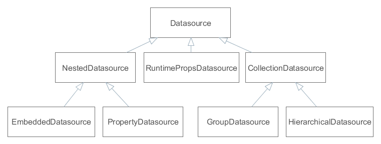

Источники данных обеспечивают работу связанных с данными (data-aware) компонентов.
Визуальные компоненты сами не обращаются к Middleware, а получают экземпляры сущностей из связанных источников данных. При этом один источник данных может обслуживать несколько визуальных компонентов, если им нужен один и тот же экземпляр или набор экземпляров.
Связь визуального компонента и источника данных проявляется в следующем:
@Inject
private FieldGroup fieldGroup;
@Inject
private Datasource<Order> orderDs;
@Named("fieldGroup.customer")
private PickerField customerField;
public void init(Map<String, Object> params){
Customer customer;
// Get customer from component: not for common use
Component component = fieldGroup.getFieldNN("customer").getComponentNN();
customer = ((HasValue)component).getValue();
// Get customer from component
customer = customerField.getValue();
// Get customer from datasource: recommended
customer = orderDs.getItem().getCustomer();
}
Как видно из примера, работа со значениями атрибутов сущностей через компонент - не самый прямолинейный способ. В первом случае он требует приведения типа и указания поля FieldGroup в виде строки. Второй пример более безопасный и прямой, но он требует знания ещё и типа поля, которое должно быть инжектировано в контроллер. В то же время, получив методом getItem() из источника данных хранящийся в нем экземпляр, можно напрямую читать и изменять значения его атрибутов.
|
Как правило, визуальный компонент привязывается к атрибуту, непосредственно принадлежащему сущности, находящейся в источнике данных. В приведенном выше примере компонент привязан к атрибуту customer сущности Order. Можно также привязать компонент к атрибуту связанной сущности, например к customer.name. В этом случае компонент будет корректно отображать значение атрибута name, но при его изменении пользователем слушатели источника данных вызваны не будут, и изменения не будут сохранены. Поэтому привязывать компонент к атрибутам второго и более порядка имеет смысл только для отображения, например в Label, колонке Table или установив для TextField свойство editable = false. |
Источники данных также отслеживают изменения содержащихся в них сущностей, и могут отправлять измененные экземпляры обратно на Middleware для сохранения в базе данных.
Рассмотрим основные интерфейсы источников.

Рисунок 22. Интерфейсы источников данных
Стандартной реализацией такого источника является класс DatasourceImpl, который используется, например, как главный источник данных в экранах редактирования сущностей.
Способ загрузки коллекции сущностей определяется реализацией. Наиболее типичный - загрузка с Middleware через DataManager, при этом для формирования JPQL запроса используются методы setQuery(), setQueryFilter().
Стандартной реализацией такого источника является класс CollectionDatasourceImpl, который используется в экранах, отображающих списки сущностей.
Стандартной реализацией является класс GroupDatasourceImpl.
Стандартной реализацией является класс HierarchicalDatasourceImpl.
Например, в источнике dsOrder установлен экземпляр сущности Order, содержащий ссылку на экземпляр Customer. Тогда для связи экземпляра Customer с визуальными компонентами достаточно создать NestedDatasource, у которого хозяином является dsOrder, а мета-свойство указывает на атрибут Order.customer.
Стандартные реализации: для работы с одним экземпляром - PropertyDatasourceImpl, для работы с коллекцией - CollectionPropertyDatasourceImpl, GroupPropertyDatasourceImpl, HierarchicalPropertyDatasourceImpl. Последние реализуют также интерфейс CollectionDatasource, однако некоторые его нерелевантные методы, связанные с загрузкой, например, setQuery(), выбрасывают UnsupportedOperationException.
Стандартной реализацией является класс EmbeddedDatasourceImpl.
Как правило, источники данных объявляются декларативно в секции dsContext дескриптора экрана.
Автоматическое обновление CollectionDatasource
При открытии экрана, его визуальные компоненты, соединенные с источниками типа CollectionDatasource, заставляют эти источники загрузить данные. В результате, таблицы отображают данные сразу после открытия экрана, без всякого дополнительного действия пользователя. Если вы хотите предотвратить автоматическую загрузку, то установите параметр экрана DISABLE_AUTO_REFRESH в true в методе init() этого экрана, или передайте его из вызывающего кода. Данный параметр определен в перечислении WindowParams, поэтому он может быть задан следующим образом:
@Override
public void init(Map<String, Object> params) {
WindowParams.DISABLE_AUTO_REFRESH.set(params, true);
}
В этом случае, источники данных типа CollectionDatasource будут загружены только когда будет вызван их метод refresh(). Это может быть сделано как кодом приложения, так и в случае, если пользователь нажмет кнопку Search компонента Filter.